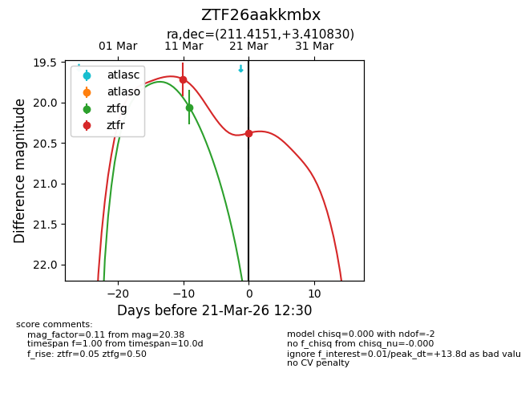
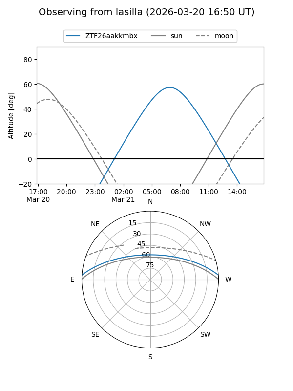
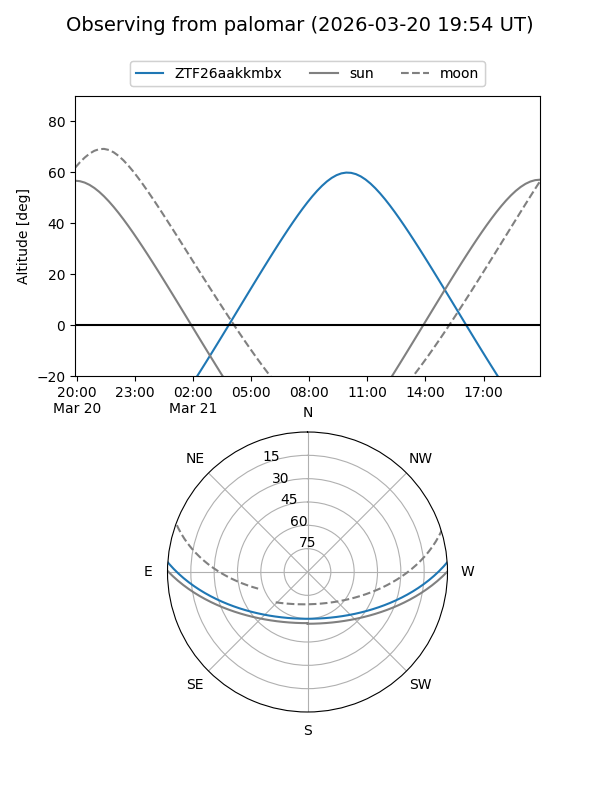
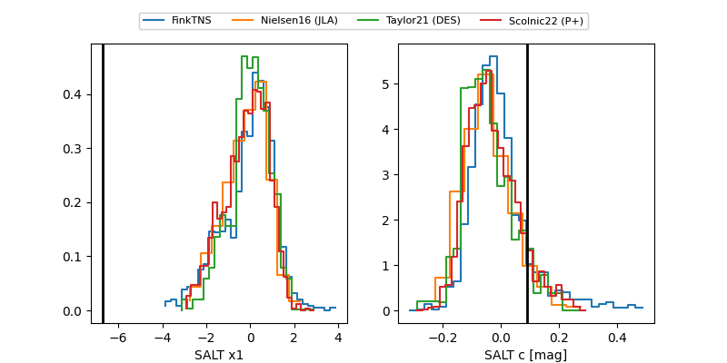

ZTF26aakkmbx
Target ZTF26aakkmbx at 2026-03-21 12:32
Aliases and brokers:
FINK: link
Lasair: link
ALeRCE: link
alt names
ZTF26aakkmbx (ztf,fink_ztf)
Coordinates:
equatorial (ra, dec) = 211.4151,+3.41083
equatorial (HMS+DMS) = 14:05:39.63,+03:24:38.99
galactic (l, b) = (342.9328,+60.38391)
Flags:
Photometry:
last ztfg=20.06, ztfr=20.38
1 ztfg, 2 ztfr detections
Lightcurve

Visibility


Additional plots
